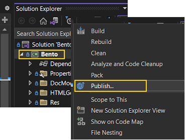
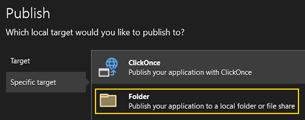
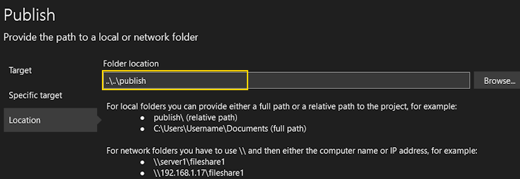
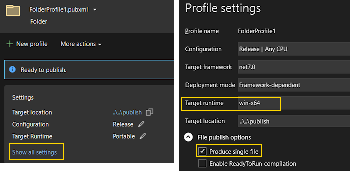
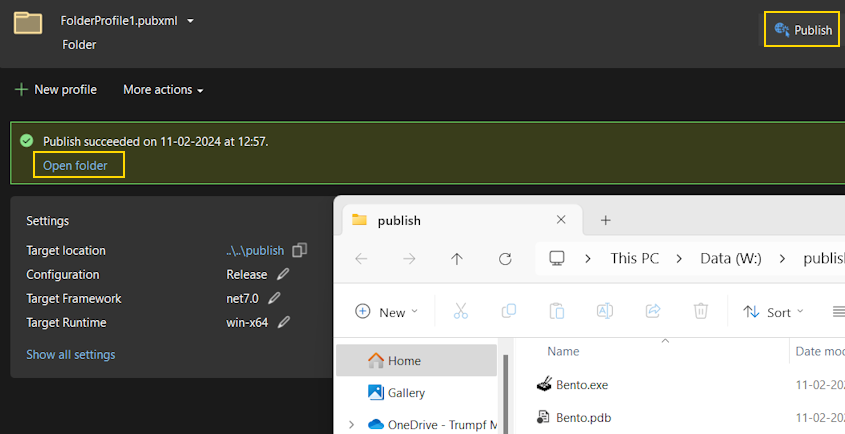

Single Binary Applications
Typically a .Net Core application is compiled into multiple files like <App>.exe, <App>.dll, <App>.runtimeconfig.json, <App>.deps.json. All of these must be copied together when deploying the application to another computer. Additional dependencies add proportionally to the deployment complexity. This complexity is justified for applications with multiple executables using shared libraries and resources. Commonly, installer applications are used to bundle all the files together and simplify the deployment in such scenarios. However it is an overkill for a simple, single-purpose tool or library.
Dotnet publish can be used to bundle all application files and dependencies into a single file simplifying the deployment. Rest of this article describes creating a VisualStudio publish profile to produce a single file binary (executable or a library).
Steps
-
Open the Solution Explorer, Right-Mouse-Click and select the Publish menu option.
 -
Press New Profile button. It should start the publish wizard. Select Folder option from the list and press Next.

-
Select the Folder target option and press Next.
 -
Key-in the publish path and press Finish to close the wizard.
 -
Click on Show all settings link to edit Profile settings. Change the Target runtime from Portable to win-x64. Now check Produce single file option under the File publish options and press OK to save the settings.
 -
Click the Publish button placed at the top-right corner to compile and publish. Use the open folder link to open and locate the published binary.
